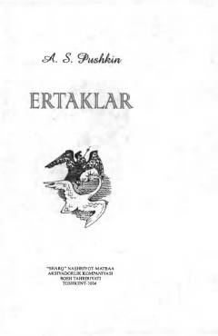

SSAleksandr Pushkinning shoh Sulton va botir Gvidon haqidagi mashhur she'riy ertagi.
Aleksandr Pushkinning mashhur she'riy ertagi o'zbek tilidagi tarjimada. Asarda shoh Sulton, uning jasur o'g'li Gvidon va sehrli Oqqush beka sarguzashtlari she'riy yo'lda mahorat bilan tasvirlangan.